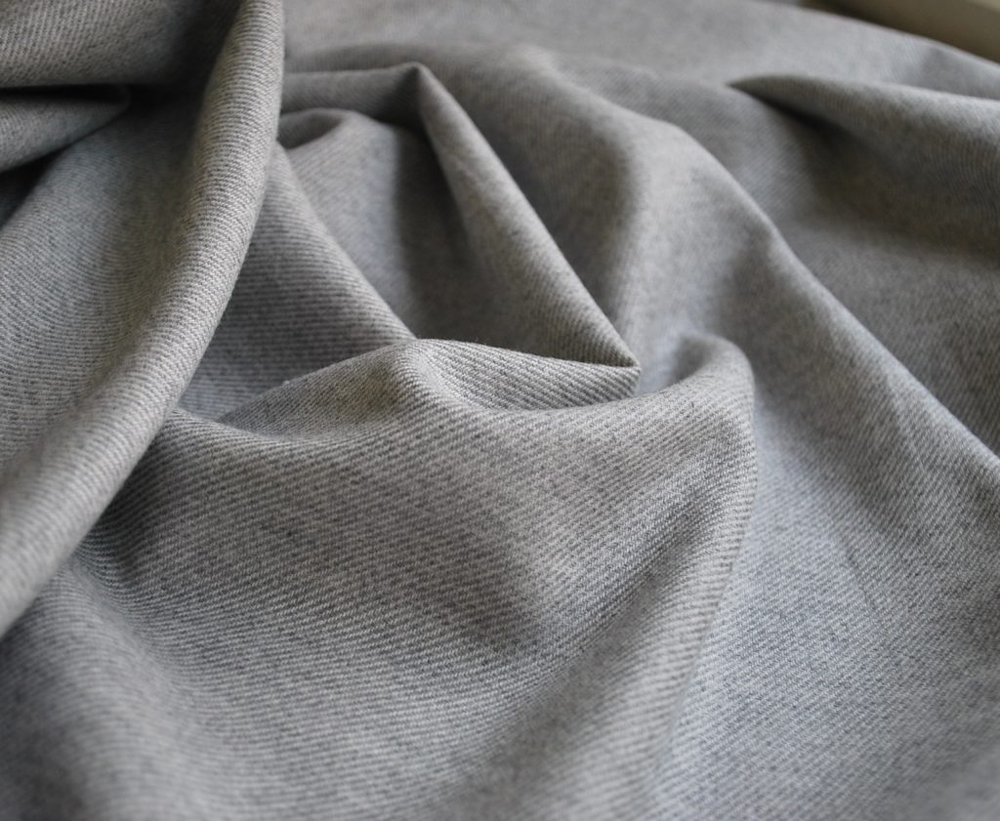
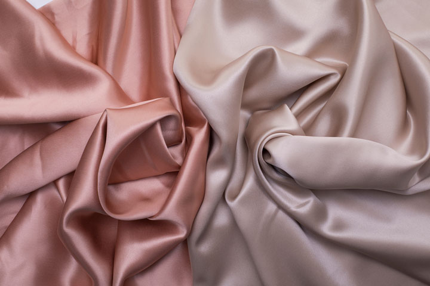
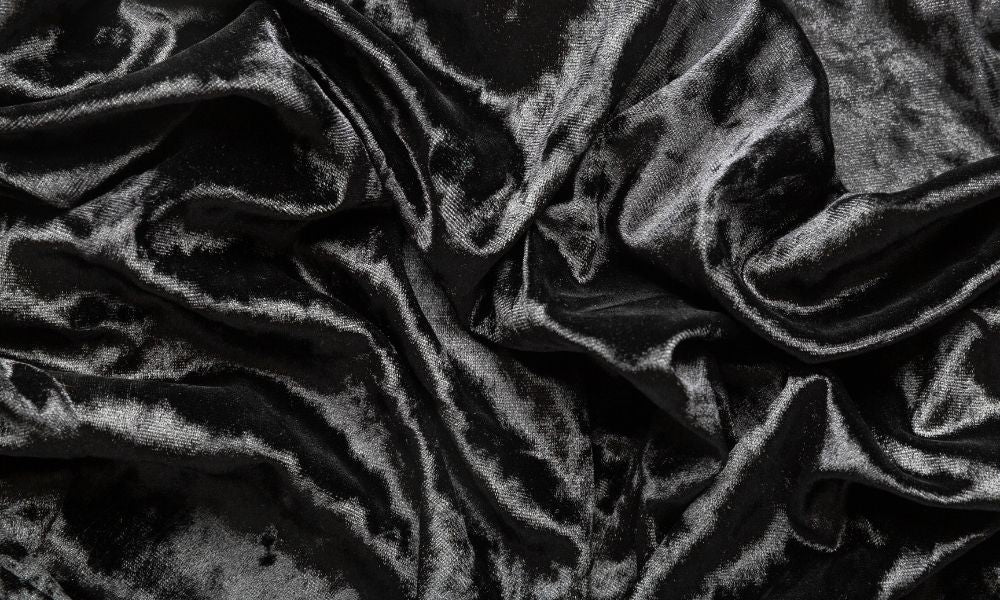
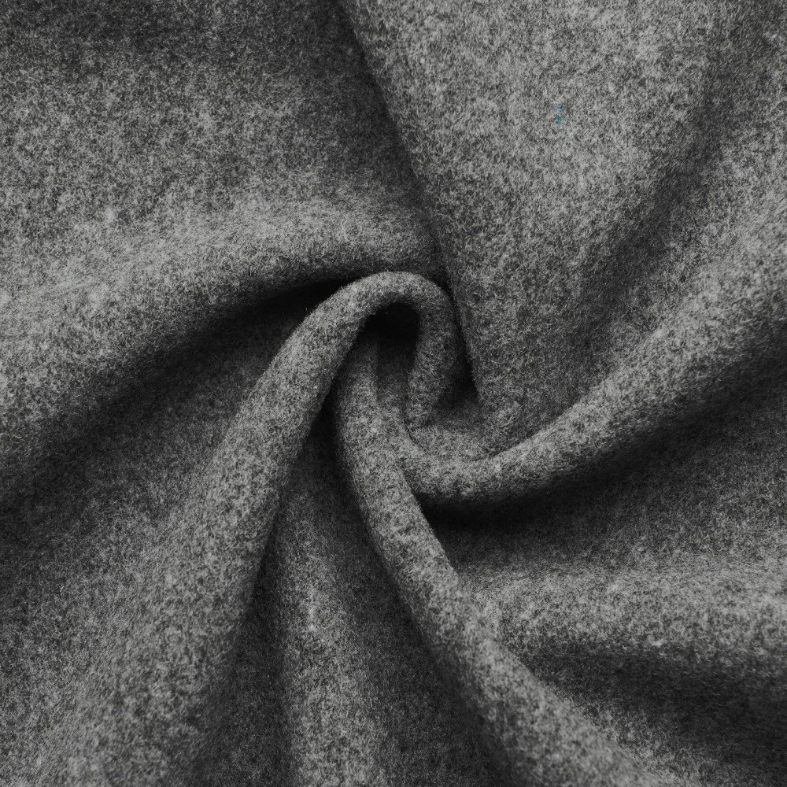
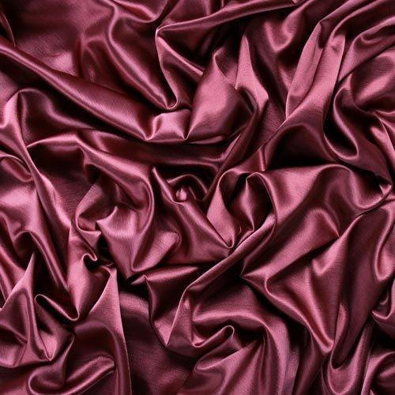

|  | Cotton fabric is derived from the fibers surrounding the seeds of cotton plants, which emerge in a round, fluffy formation once the seeds are mature. The earliest evidence for the use of cotton fibers in textiles is from the Mehrgarh and Rakhigarhi sites in India, which date to approximately 5000 BC. Naturally colored cotton can come in red, green, and several shades of brown. |
|
|  | Silk has a smooth, soft texture that is not slippery, unlike many synthetic fibers. Silk is one of the strongest natural fibers, but it loses up to 20% of its strength when wet. It has a good moisture regain of 11%. In short, there are four types of natural silk produced around the world: Mulberry silk, Eri silk, Tasar silk and Muga silk. |
|
|  | Velvet is a type of woven fabric with a dense, even pile that gives it a distinctive soft feel. By extension, the word velvety means "smooth like velvet". Historically, velvet was typically made from silk.Velvet comes in all colours. Black, white, cream, blue, red, green, violet, pink, yellow, brown ... but it mostly comes in colours that are fashionable this year. |
|
|  | Wool is a type of fabric derived from the hairs of various animals. While most people associate the word “wool” with sheep, there are, in fact, a variety of distinct types of wool that producers derive from animals other than sheep. To make wool, producers harvest the hairs of animals and spin them into yarn. It is generally a creamy white color, although some breeds of sheep produce natural colors, such as black, brown, silver, and random mixes. |
|
|  | A satin weave is a type of fabric weave that produces a characteristically glossy, smooth or lustrous material, typically with a glossy top surface and a dull back; it is not durable, as it tends to snag. It is one of three fundamental types of textile weaves alongside plain weave and twill weave. |